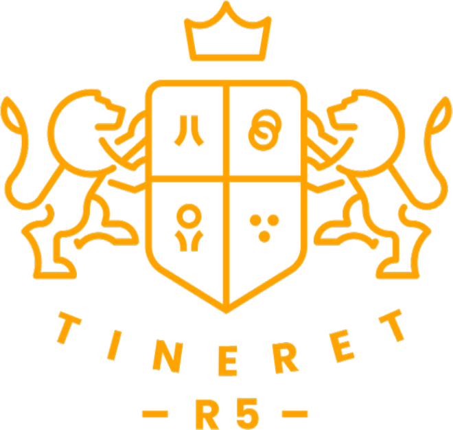

Suntem o comunitate de tineri din Regiunea 5 Arad care crește împreună în credință, prietenie și slujire — prin seri de tineret, tabere, sport și proiecte care lasă urme.
„R5" vine de la cei cinci piloni care ne definesc — cinci cuvinte cu care ne rugăm să ne caracterizeze viața de tineri.
Ne întâlnim ca să ne apropiem de Dumnezeu și unii de alții: la seri de tineret, în grupuri mici, la tabere și în proiecte de slujire. Credem că tinerețea nu e o pauză de la credință, ci momentul în care spunem „da" chemării la mai mult.
Fie că vii de mult sau pentru prima dată, ai un loc aici.
Text editabil — ajustează după programul vostru real.
Închinare, un cuvânt care ne provoacă și timp împreună — inima comunității noastre.
Câteva zile deconectați de rutină și conectați la Dumnezeu, la munte și unii cu alții.
Campionate de volei, BBQ-uri și mișcare — comunitate construită și în joacă.
Slujim comunitatea din jur prin acțiuni de bine, colinde și proiecte cu impact.
Text editabil — pune aici proiectele voastre reale.
„La R5 am găsit prieteni care mă trag mai aproape de Dumnezeu, nu mai departe."
„Am venit dintr-o curiozitate și am rămas pentru familia pe care am găsit-o aici."
„Tabăra R5 mi-a schimbat felul în care privesc credința și relațiile."
Text editabil — înlocuiește cu testimoniale reale.